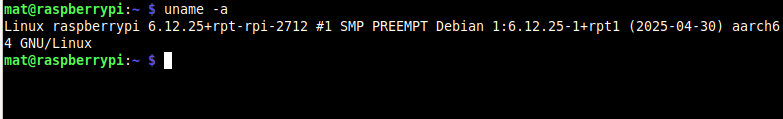
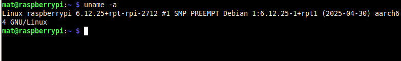
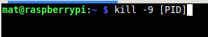
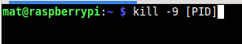

The Linux Command-Line - Bash Shell Terminal
The Linux command line is one of the most powerful tools in a system administrator's or developer's toolkit. It allows users to interact directly with the operating system using typed commands, offering precise control over file systems, processes, networking, and more.
What many new users don't realize is that Linux commands are actually small executable programs. For example, when you type ls to list directory contents, you're not just issuing a special keyword - you're running a compact program located at /bin/ls. The same applies cp, mv, grep, and mkdir. These are self-contained utilities built to perform specific tasks.
At the heart of the command-line experience is the Linux Terminal, which serves as a user interface to the system's shell. The terminal sends your input to the shell interpreter, most commonly Bash (Bourne Again Shell. Bash is responsibile for parsing your command, interpreting it, and then executing the appropriate program or script.
Here's a simplified flow of what happens:
- You enter a command (e.g., ls -l) into the terminal
- The terminal forwards this input to Bash, the shell interpreter.
- Bash parses the command, checks for syntax, variables, and expansions
- It then locates and executes the corresponding program (in this case /bin/ls) with provided arguments.
- The output is returned to the terminal, where you see the results.
Understanding this flow helps demystify the command-line environment. It’s not magic — it’s a layered process involving human-readable input, a shell that interprets it, and small programs that execute the requested actions.
This tutorial introduces essential Linux commands and provides hands-on examples with screenshots. Whether you're a beginner or brushing up on core skills, this guide will help you build a strong foundation in working with the Linux command-line environment.
1. Navigating and Managing Directories
pwd
cd /Documents
mkdir new_folder
rmdir new_folder
pwd - Print Working Directory: - Displays the full path of your current location in the filesystem.
cd - Change Directory - Moves you into a different folder or location in the filesystem.
ls - List Directory Contents - Displays the names of files and directories in the current location.
mkdir - Make Directory - Creates a new empty directory (folder) with the specified name.
rmdir - Remove Directory - Deletes an empty directory from the filesystem.


2. File Creation and Editing
touch new_file.txt
file new_file.txt
nano new_file.txt
vi new_file.txt
touch - Create File or Update Timestamp - Creates an empty file or updates the timestamp of an existing one.
file - File Type Checker - Reveals what kind of data a file contains (text, binary, image, ect.)
nano - Beginner-Friendly Text Editor - Opens a simple text editor directly in the terminal.
vi - Powerful Terminal Text Editor - Opens the vi or vim editor, favored by advanced users for its powerful features.


3. Viewing and Searching File Content
cat new_file.txt
ls -l /home/user
tree
grep "search_term" new_file.txt
head -n 5 new_file.txt
tail -n 5 new_file.txt
cat - Concatenate and Display File - Outputs the contents of a file to the terminal.
ls -l - List Files in Long Format - Displays file and directory details (permissions, owner, size, date).
tree - Directory Tree Viewer - Visually displays the contents of a directory in a branching, tree-like format. It shows the folder structure and nested files, making it easier to understand the hierarchy of a given directory.
grep - Pattern Search Tool - Searches for specific text patterns inside files or output.
head - Show File Start - Displays the first 10 lines (default) of a file or output.
tail - Show File End - Displays the last 10 lines (default) of a file or output.


4. Archiving and Locating Files
tar -cvf archive.tar /home/user/documents
locate filename.txt
find /home -name "filename.txt"
tar - Archive Tool - Packs or unpacks multiple files into a single .tar archive.
locate - Fast File Finder (indexed) - Quickly finds file paths using a system-maintained index.
find - Real-Time File Search - Searches for files and directories based on name, size, time, ect.
5. User and Permissions Management
whoami
sudo apt update
chmod 755 new_file.txt
chown user:user new_filapt - Debian Package Manager - Used to install, update, or remove software on Debian-based systems.e.txt
sudo useradd newuser
sudo passwd newuser
sudo userdel newuser
whoami - Current User Check - Displays the username of the person currently logged in.
sudo - Run as Admin - Executes a command with elevated (root) privileges.
chmod - Change Permissions - Set who can read, write, or execute a file or directory.
chown - Change Owner - Assigns a new owner or group to a file or directory.
useradd - Create a User Account - Adds a new user account to the system.
passwd - Change Password - Sets or changes a user's password.
userdel - Delete a User Account - Removes a user account and optionally their home directory.


6. System Monitoring and Maintenance
df -h
du -sh /home/user
top
htop
uname -a
df -h - Disk Usage Overview - Displays filesystem space usage in human-readable format.
du -sh - Directory Size Summary - Shows that total disk space used by a specific directory.
top - Real-Time Process Monitor
htop - Advanced Process Viewer - Like top, but with an easier interface and more interactivity.
uname -a - System Dump Info - Displays full system information including kernel, architecture, and hostname.


 

7. Package Management
sudo apt install nano
sudo dnf update
sudo dpkg -i package.deb
apt - Debian Package Manager - Used to install, update, or remove software on Debian-based systems.
dnf - Fedora/RHEL package Manager - Used to install, update, or remove software on Fedora and RHEL-based systems.
dpkg -i - Install .deb Package - Installs a Debian software package manually.


8. Service and Process Management
sudo systemctl restart ssh
kill -9 [PID]
systemctl - System Manager - Controls system services (start, stop, enable, check status).
kill - Terminate a Process - Sends a signal (usually to stop) a process using its PID. PIDs can be found with top/htop.
 

9. System Operations
sudo shutdown now
sudo reboot
shutdown - Power Off System - Schedules or performs a safe system shutdown.
restart - Reboot System - Not a standalone command, but often aliased to sudo reboot to restart the system.


10. Network Operations and Data Retrieval
wget http://example.com/file.zip
curl http://example.com/file.zip -o file.zip
wget - File Downloader - Fetches files from the internet using HTTP, HTTPS, or FTP.
curl - Data Transfer Tool - Transfers data from or to a server, useful for APIs, downloads, or testing.

11. Utility and Time Commands
history
echo "Hello World"
cal
time ls -la
date
history - Command History Viewer - Displays previously executed commands in the terminal.
echo - Print Text or Variables - Outputs text to the terminal or displays the value of variables.
cal - Calendar Viewer - Displays a monthly calendar in the terminal.
date - Current Date and Time - Displays the systems current date and time settings.


Conclusion
The Linux command line is more than just a tool — it's a direct and powerful way to interact with the heart of the operating system. In this tutorial, we explored how each command is actually a small executable program, and how the terminal works with the Bash shell to interpret and run your instructions.
We covered a wide range of essential Linux commands — from navigating directories with cd and ls, to manipulating files with touch, cat, and chmod, to managing processes with top and kill. Each command plays a specific role, but together they form a flexible toolkit for accomplishing nearly any task on a Linux system.
By understanding how these commands work and how to use them efficiently, you're building a strong foundation in Linux system administration and scripting. Whether you're troubleshooting, automating tasks, or simply exploring your system, the command line gives you full control with precision and speed.
Keep practicing these commands, experiment in a terminal sandbox, and don’t be afraid to explore the man pages (man command) for deeper learning on a given command. The more time you spend at the command line, the more intuitive and empowering it becomes.